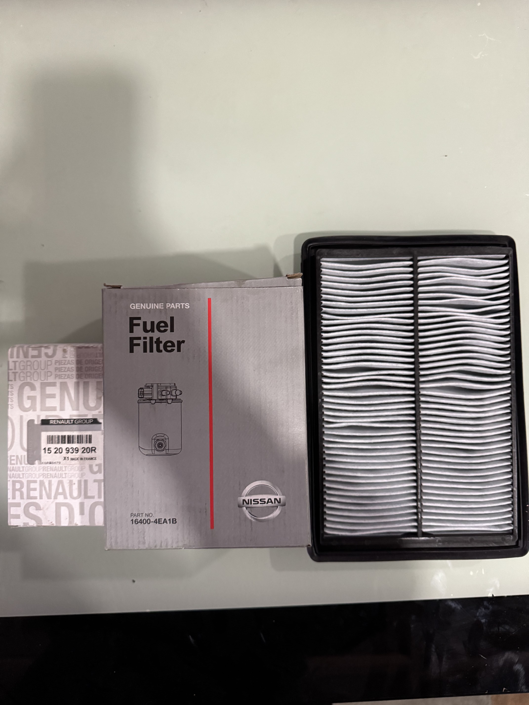

Nissan Periyodik Bakım
Nissan araçlar için düzenli bakım ve üretici önerilerine uygun kontroller
Hizmet Kapsamı
Nissan araçlarınızın üretici önerilerine göre düzenli periyodik bakımları, motor performansını korur, yakıt verimliliğini artırır ve arıza riskini minimize eder. Uzman ekibimiz, Nissan bakım standartlarına uygun kontrol listeleriyle aracınızın tüm sistemlerini kontrol eder.
Bakım Kapsamında Yapılanlar
- Motor yağı ve filtre değişimi
- Hava filtresi kontrolü ve değişimi
- Yakıt filtresi kontrolü
- Fren hidroliği kontrolü
- Motor soğutma suyu kontrolü
- Akü kontrolü ve şarj durumu
- Ön-arka fren balata kontrolü
- Süspansiyon ve rot kontrolleri
- Lastik hava basıncı ayarı
- Aydınlatma sistemleri kontrolü
Periyodik Bakım Neden Önemli?
Düzenli periyodik bakım, Nissan aracınızın performansını korur, güvenliğinizi sağlar ve beklenmedik arızaları önler. Üretici tavsiyelerine uygun bakım, aracınızın değerini korumaya yardımcı olur.
Detaylı bilgi için Nissan periyodik bakım sayfamızı inceleyebilirsiniz.
.jpg)
Nissan Motor Onarım ve Teşhis
Nissan motor arıza teşhisi ve profesyonel onarım hizmeti
Hizmet Kapsamı
Nissan motorlarında uzman teşhis ve onarım hizmeti sunuyoruz. Bilgisayarlı teşhis cihazlarımız sayesinde motor arızalarını hızlı şekilde tespit ediyor ve profesyonel müdahale yapıyoruz.
Motor Onarım Hizmetleri
- Bilgisayarlı motor arıza teşhisi
- Motor kontrol ünitesi (ECU) analizi
- Enjektör temizleme ve ayarı
- Supap ayarı ve bakımı
- Triger kayışı değişimi
- Motor üst revirasyonu
- Silindir kapak contası değişimi
- Motor yağ kaçağı onarımı
- Turbo bakım ve onarımı
Teknolojik Altyapı
Son model teşhis cihazları ve uzman kadromuzla Nissan motor problemlerine profesyonel çözüm üretiyoruz. Orijinal parça kullanımı ve garanti güvencesi ile hizmet veriyoruz.
Detaylar için Nissan arıza tespiti sayfasını inceleyebilirsiniz.
.jpg)
Nissan Fren Sistemleri
Nissan fren sistemi bakımı ve güvenli sürüş kontrolleri
Hizmet Kapsamı
Güvenlik önceliğimizdir. Nissan fren sistemlerini en ileri teknoloji ile kontrol ediyor, bakım ve onarımını yapıyoruz. ABS, ESP gibi elektronik fren sistemlerinde de uzmanız.
Fren Sistemi Hizmetleri
- Ön ve arka fren balata değişimi
- Fren diski kontrolü ve değişimi
- Fren hidroliği (yağı) değişimi
- Fren kaliperi bakım ve onarımı
- ABS sistemi kontrolü
- El freni ayarı
- Fren hortumu kontrolü
- Ana merkez ve kampana kontrolü
- Fren sistemi hava alma
- Elektronik park fren sistemi bakımı
Neden Fren Bakımı Önemli?
Fren sistemi, Nissan aracınızın en kritik güvenlik unsurudur. Düzenli kontrol ve bakım, sürüş güvenliğinizi maksimize eder ve olası kazaları önler.
.jpg)
Nissan Elektronik Sistemler ve Teşhis
Nissan elektronik sistemlerinde bilgisayarlı teşhis ve onarım
Hizmet Kapsamı
Nissan araçların karmaşık elektronik sistemlerinde uzman kadromuz ve son teknoloji teşhis ekipmanlarımız ile profesyonel hizmet sunuyoruz.
Elektronik Sistem Hizmetleri
- Motor kontrol ünitesi (ECU) teşhisi
- Şanzıman beyni kontrolü
- ABS/ESP sistem kontrolü
- Hava yastığı (Airbag) sistemi
- İmmobilizer sistemi
- Park sensörü ve kamera
- Oto pilot sistemleri
- Multimedya ve navigasyon
- Elektrik tesisatı arıza giderme
- Sensör ve aktüatör değişimi
İleri Teknoloji Teşhis
Orijinal marka yazılımları ve profesyonel teşhis cihazları ile Nissan elektronik sistemlerinde hassas teşhis ve onarım yapıyoruz.
Detaylı bilgi için Nissan elektronik servis sayfasına göz atabilirsiniz.
.jpg)
Nissan Yol Yardım
Nissan araçlar için hızlı destek ve yönlendirme
Hizmet Kapsamı
Nissan aracınız yolda kaldığında en yakın destek noktasına yönlendirme, temel arıza kontrolü ve gerektiğinde çekici organizasyonu ile hızlı çözüm sunuyoruz.
Yol Yardım Hizmetleri
- Arıza yönlendirme desteği
- Akü takviye desteği
- Çekici organizasyonu
- Yerinde temel arıza analizi
- Telefon ile teknik ön bilgilendirme
.jpg)
Nissan Yerinde Parça Değişimi
Nissan araçlar için hızlı parça tedariki ve yerinde müdahale
Hizmet Kapsamı
Nissan aracınız yolda kaldığında gerekli yedek parçayı temin ederek yerinde müdahale sağlıyoruz.
Yerinde Müdahale Adımları
- Telefonla hızlı ön arıza tespiti
- Uygun parçanın stok veya tedarik kontrolü
- Sahada uzman ekip yönlendirmesi
- Parça değişimi sonrası güvenlik kontrolleri
- Gerekirse servis içi ileri onarım planlaması
